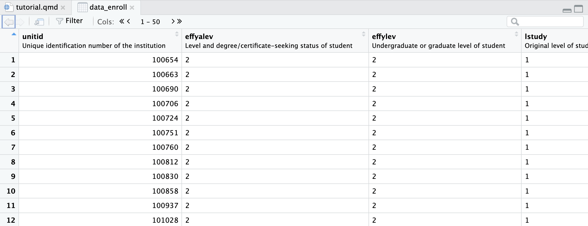
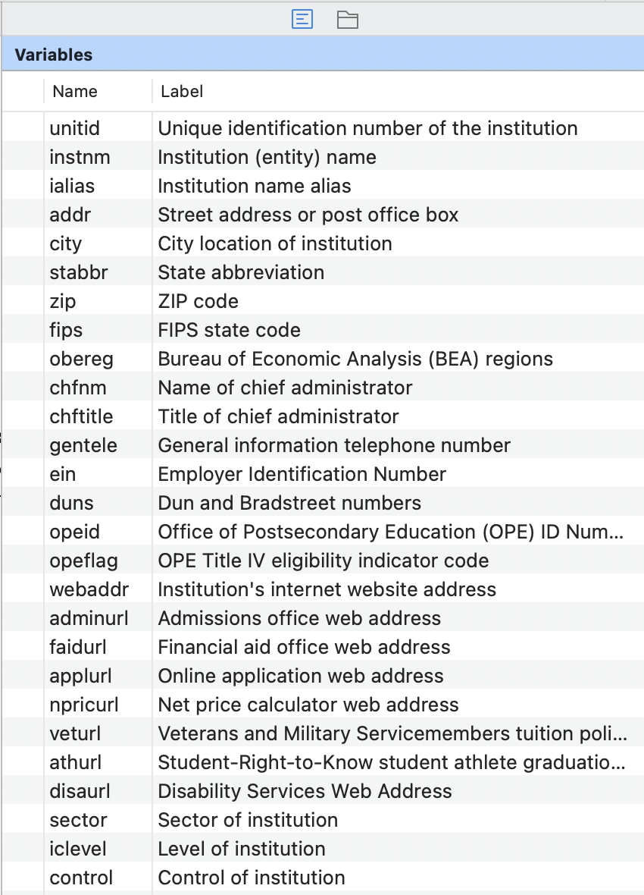
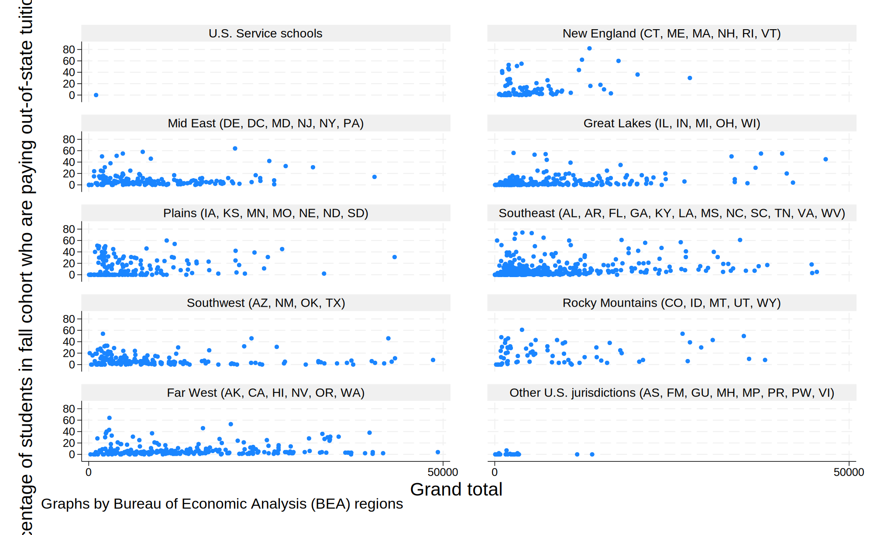

data_without_labels |>
count(obereg)# A tibble: 10 × 2
obereg n
<dbl> <int>
1 0 7
2 1 337
3 2 1025
4 3 891
5 4 491
6 5 1536
7 6 665
8 7 236
9 8 953
10 9 148IPEDtaS TutorialIPEDtaS to automagically retrieve labelled IPEDS .dta filesIPEDtaS doesIPEDtaS scripts do all this heavy lifting for you so you can use nicely labelled IPEDS data without the extra effort!You will see more of this in the applied example below, but, in short, they make data analysis much easier and reduce the amount you will have to look at the dictionary/codebook!
data_without_labels |>
count(obereg)# A tibble: 10 × 2
obereg n
<dbl> <int>
1 0 7
2 1 337
3 2 1025
4 3 891
5 4 491
6 5 1536
7 6 665
8 7 236
9 8 953
10 9 148data_with_labels |>
count(obereg)# A tibble: 10 × 2
obereg n
<dbl+lbl> <int>
1 0 [U.S. Service schools] 7
2 1 [New England (CT, ME, MA, NH, RI, VT)] 337
3 2 [Mid East (DE, DC, MD, NJ, NY, PA)] 1025
4 3 [Great Lakes (IL, IN, MI, OH, WI)] 891
5 4 [Plains (IA, KS, MN, MO, NE, ND, SD)] 491
6 5 [Southeast (AL, AR, FL, GA, KY, LA, MS, NC, SC, TN, VA, WV)] 1536
7 6 [Southwest (AZ, NM, OK, TX)] 665
8 7 [Rocky Mountains (CO, ID, MT, UT, WY)] 236
9 8 [Far West (AK, CA, HI, NV, OR, WA)] 953
10 9 [Other U.S. jurisdictions (AS, FM, GU, MH, MP, PR, PW, VI)] 148First things first, let’s consider the what you will need on your computer to get started
R
tidyverse package
install.packages("tidyverse") to get the latest versionpython search into your Stata command boxThis part is identical for both Stata and R users, the main points to note are:
IPEDtaS.do or IPEDtaS.R file as the “working directory”./data and ./dictionaries folders
./zip-data, ./zip-do-files, ./zip-dictionaries, ./unzip-data, ./unzip-do-files, ./unzip-dictionaries which are folders used temporarily behind-the-scenesIPEDtaS was designed
IPEDtaS in your data folder (e.g ./data/IPEDtaS.do) which will place the data in ./data/data/hd2022.dtaIPEDtaS in your ./scripts folder and go through adjusting all the relative paths by adding ../ to back out one levelThe only real change you have to make in the whole process is to the scripts is selecting which files you want to download
selected_files <- c() must be a valid list of IPEDS file names
, except the final oneHere are some short examples of file selection
selected_files <- c("HD2021", "EFFY2022", "SFA2122")
## OR
selected_files <- c(
"HD2021",
"EFFY2022",
"SFA2122"
)selected_files <- c(
"HD2021",
# "IC2022",
# "IC2022_AY",
"EFFY2022",
# "EFFY2022_DIST",
"SFA2122"
)That’s about it, when you run the script, the files you put in selected_files will be downloaded
local selected_files needs to be a valid list of IPEDS file names
/// except the final oneHere are some short examples of file selection
local selected_files ///
"HD2021" ///
"EFFY2022" ///
"SFA2122"// or * and multi-line commments which start /* and end */
/// and nothing else/**/local selected_files ///
"HD2021" ///
///
/*
"IC2022" ///
"IC2022_AY" ///
*/
"EFFY2022" ///
///
/*
"EFFY2022_DIST" ///
*/
"SFA2122"That’s about it, when you run the script, the files you put in local selected_files will be downloaded
Once you have the file selection set, simply save the script and hit run/do!
If you’re using this tool as part of a reproducible research project, you might want to include running it as part of your analysis code
hd2021.dta to a file you downloadif(!file.exists("data/hd2021.dta")) { source("IPEDtaS.R") }if(!fileexists("data/hd2021.dta")) { do "IPEDtaS.do" }Okay, now we have our labelled IPEDS data, let’s walk through a simple descriptive analysis using
Two things to note:
IPEDtaS, Reading Data, & Joining Data1. Create a new folder on your computer, download a copy of IPEDtaS.R, and place it in the folder
2. Adjust selected_files <- c() in IPEDtaS.R to download the 3 files we want like below
selected_files <- c(
"HD2021",
"EFFY2022",
"SFA2122"
)3. Select the whole IPEDtaS.R script and hit “Run”
4. Start a new R script in that same folder
5. Load tidyverse, haven (part of tidyverse, but requires loading separately), labelled (what haven uses behind the scenes), and gtsummary (to easily create output tables)
library(tidyverse)
library(haven)
library(labelled)
library(gtsummary)6. Read our data in
data_info <- read_dta("data/hd2021.dta")
data_enroll <- read_dta("data/effy2022.dta")
data_aid <- read_dta("data/sfa2122.dta")Okay, now, take a look at the enrollment data we just read in (click on data_enroll in the environment in the top right)

Notice the descriptions under each variable name
7. Now we want to join our data together
data <- left_join(data_info, data_enroll, by = "unitid") |>
left_join(data_aid, by = "unitid")1. Create a new folder on your computer, download a copy of IPEDtaS.do, and place it in the folder
2. Adjust local selected_files in IPEDtaS.do to download the 3 files we want like below
local selected_files ///
"HD2021" ///
"EFFY2022" ///
"SFA2122"3. Select the whole IPEDtaS.do script and hit “Run”
4. Start a new Stata do file in that same folder
5. Load our first data set, hd2022
use "data/hd2021.dta", clearOkay, now, take a look at the variables panel (by default in right hand panel)

6. Join in our other data sets in a “left join” style (i.e., all observations in the first data set are kept even if they don’t have a match in the second)
joinby unitid using "data/sfa2122.dta", unmatched(master) _merge(sfa)
joinby unitid using "data/effy2022.dta", unmatched(master) _merge(effy)Now we have everything read in the advantage of the labels will truly begin to show!
8. Some of you may have noticed that our data has become extremely “long”
nrow(data)[1] 116480effylev, so, let’s look at how many observations we have for each value of effylevdata |> count(effylev)# A tibble: 5 × 2
effylev n
<dbl+lbl> <int>
1 -2 [Not applicable, undergraduate detail] 102471
2 1 [All students total] 5953
3 2 [Undergraduate] 5680
4 4 [Graduate] 2040
5 NA 336Once again, if you’re used to IPEDS data, you wouldn’t usually see the information in the [square brackets]
The labels help us quickly identify what the different values of effylev mean and that if we are interested in undergraduate figures (which for now, we are) we want to keep rows that are effylev == 2
data <- data |> filter(effylev == 2)7. Some of you may have noticed that our data has become extremely “long”
count 116,480effylev, so, let’s look at how many observations we have for each value of effylevtabulate effylev Undergraduate or graduate level of |
student | Freq. Percent Cum.
-------------------------------------+-----------------------------------
Not applicable, undergraduate detail | 102,471 88.23 88.23
All students total | 5,953 5.13 93.35
Undergraduate | 5,680 4.89 98.24
Graduate | 2,040 1.76 100.00
-------------------------------------+-----------------------------------
Total | 116,144 100.00Once again, if you’re used to IPEDS data, you would usually see a bunch of numbers in the left-hand column, but now we see informative labels
labelbook to check theselabelbook label_effylevValue label label_effylev
---------------------------------------------------------------------------------------------------------------------------
Values Labels
Range: [-2,4] String length: [8,36]
N: 4 Unique at full length: yes
Gaps: yes Unique at length 12: yes
Missing .*: 0 Null string: no
Leading/trailing blanks: no
Numeric -> numeric: no
Definition
-2 Not applicable, undergraduate detail
1 All students total
2 Undergraduate
4 Graduate
Variables: effylevThe labels help us quickly identify what the different values of effylev mean and that if we are interested in undergraduate figures (which for now, we are) we want to keep rows that are effylev == 2
keep if effylev == 2(110,800 observations deleted)9. Now let’s explore some trends in our data to show how labels can help. How does the percent of students paying out-of-state tuition vary by region?
data |>
group_by(obereg) |>
summarize(median_perc_out_of_state = median(scfa13p, na.rm = TRUE))# A tibble: 10 × 2
obereg median_perc_out_of_s…¹
<dbl+lbl> <dbl>
1 0 [U.S. Service schools] 0
2 1 [New England (CT, ME, MA, NH, RI, VT)] 5
3 2 [Mid East (DE, DC, MD, NJ, NY, PA)] 5
4 3 [Great Lakes (IL, IN, MI, OH, WI)] 2
5 4 [Plains (IA, KS, MN, MO, NE, ND, SD)] 6
6 5 [Southeast (AL, AR, FL, GA, KY, LA, MS, NC, SC, TN,… 5
7 6 [Southwest (AZ, NM, OK, TX)] 4
8 7 [Rocky Mountains (CO, ID, MT, UT, WY)] 19
9 8 [Far West (AK, CA, HI, NV, OR, WA)] 4
10 9 [Other U.S. jurisdictions (AS, FM, GU, MH, MP, PR, … 0
# ℹ abbreviated name: ¹median_perc_out_of_stateNotice how again the labels make our analysis instantly more informative
haven has a handy tool for that as well as_factor()
data |>
group_by(as_factor(obereg)) |>
summarize(median_perc_out_of_state = median(scfa13p, na.rm = TRUE))# A tibble: 10 × 2
`as_factor(obereg)` median_perc_out_of_s…¹
<fct> <dbl>
1 U.S. Service schools 0
2 New England (CT, ME, MA, NH, RI, VT) 5
3 Mid East (DE, DC, MD, NJ, NY, PA) 5
4 Great Lakes (IL, IN, MI, OH, WI) 2
5 Plains (IA, KS, MN, MO, NE, ND, SD) 6
6 Southeast (AL, AR, FL, GA, KY, LA, MS, NC, SC, TN, VA… 5
7 Southwest (AZ, NM, OK, TX) 4
8 Rocky Mountains (CO, ID, MT, UT, WY) 19
9 Far West (AK, CA, HI, NV, OR, WA) 4
10 Other U.S. jurisdictions (AS, FM, GU, MH, MP, PR, PW,… 0
# ℹ abbreviated name: ¹median_perc_out_of_state8. Now let’s explore some trends in our data to show how labels can help. How does the percent of students paying out-of-state tuition vary by region?
tabstat scfa13p, s(median) by(obereg)Summary for variables: scfa13p
Group variable: obereg (Bureau of Economic Analysis (BEA) regions)
obereg | p50
-----------------+----------
U.S. Service sch | 0
New England (CT, | 5
Mid East (DE, DC | 5
Great Lakes (IL, | 2
Plains (IA, KS, | 6
Southeast (AL, A | 5
Southwest (AZ, N | 4
Rocky Mountains | 19
Far West (AK, CA | 4
Other U.S. juris | 0
-----------------+----------
Total | 4
----------------------------Notice how again the labels make our analysis instantly more informative
10. What about the relationship between total enrollment and the percent paying instate tuition? Are bigger schools relying more on out-of-state students? Does this trend vary by region?
ggplot(data |> filter(efytotlt < 50000),
aes(x = efytotlt,
y = scfa13p)) +
geom_point() +
geom_smooth(method = "lm", se = FALSE) +
theme_minimal() +
theme(axis.text.x = element_text(angle = 45, hjust = 0.8)) +
facet_wrap(~obereg)
Okay… But what do those variables mean?
So, let’s add labels
facet_wrap(~obereg) to facet_wrap(~as_factor(obereg))
labs() argument as normal
x = "my x axis label", we use the var_label() from the labelled packageggplot(data |> filter(efytotlt < 50000),
aes(x = efytotlt,
y = scfa13p)) +
geom_point() +
geom_smooth(method = "lm", se = FALSE) +
theme_minimal() +
theme(axis.text.x = element_text(angle = 45, hjust = 0.8)) +
labs(x = var_label(data$efytotlt),
y = var_label(data$scfa13p)) +
facet_wrap(~as_factor(obereg))
Well, that’s more informative, but a little messy
y = str_wrap(var_label(data$scfa13p), 40) says to make a new line every 40 characters on the y axislabeller = label_wrap_gen(multi_line = TRUE) inside our facet_wrap() allows the facet labels to wrap onto multiple linesggplot(data |> filter(efytotlt < 50000),
aes(x = efytotlt,
y = scfa13p)) +
geom_point() +
geom_smooth(method = "lm", se = FALSE) +
theme_minimal() +
theme(axis.text.x = element_text(angle = 45, hjust = 0.8)) +
labs(x = var_label(data$efytotlt),
y = str_wrap(var_label(data$scfa13p), 40)) +
facet_wrap(~as_factor(obereg),
labeller = label_wrap_gen(multi_line = TRUE))
9. What about the relationship between total enrollment and the percent paying instate tuition? Are bigger schools relying more on out-of-state students? Does this trend vary by region?
scatter scfa13p efytotlt if efytotlt < 50000, by(obereg, col(2))
quietly graph export scatter.svg, replace
11. Lastly, let’s look at how labels can show up in modeling. Let’s see if the percentage of students paying out of state changes by the level of the institution (4 year, 2 year, Less than 2 year)
model <- lm(scfa13p ~ factor(iclevel),
data = data)
tbl_regression(model)Characteristic |
Beta |
95% CI 1 |
p-value |
|---|---|---|---|
| factor(iclevel) | |||
| 1 | — | — | |
| 2 | -8.7 | -9.9, -7.4 | <0.001 |
| 3 | -14 | -21, -7.6 | <0.001 |
| 1
CI = Confidence Interval |
|||
Without using labels, the regression output needs the code book to interpret
Remember from above, using as_factor() rather than factor() tells R to use the labels as the levels
model <- lm(scfa13p ~ as_factor(iclevel),
data = data)
tbl_regression(model)Characteristic |
Beta |
95% CI 1 |
p-value |
|---|---|---|---|
| as_factor(iclevel) | |||
| Four or more years | — | — | |
| At least 2 but less than 4 years | -8.7 | -9.9, -7.4 | <0.001 |
| Less than 2 years (below associate) | -14 | -21, -7.6 | <0.001 |
| 1
CI = Confidence Interval |
|||
Okay that is much clearer what is going on!
as_factor(iclevel) is still a bit messy thoughvar_label() function again alongside the label = argument in tbl_regressiontbl_regression(model,
label = list(`as_factor(iclevel)` = var_label(data$iclevel)))Characteristic |
Beta |
95% CI 1 |
p-value |
|---|---|---|---|
| Level of institution | |||
| Four or more years | — | — | |
| At least 2 but less than 4 years | -8.7 | -9.9, -7.4 | <0.001 |
| Less than 2 years (below associate) | -14 | -21, -7.6 | <0.001 |
| 1
CI = Confidence Interval |
|||
10. Lastly, let’s look at how labels can show up in modeling. Let’s see if the percentage of students paying out of state changes by the level of the institution (4 year, 2 year, Less than 2 year)
regress scfa13p i.iclevel Source | SS df MS Number of obs = 1,572
-------------+---------------------------------- F(2, 1569) = 98.14
Model | 30433.0627 2 15216.5313 Prob > F = 0.0000
Residual | 243262.532 1,569 155.043041 R-squared = 0.1112
-------------+---------------------------------- Adj R-squared = 0.1101
Total | 273695.595 1,571 174.217438 Root MSE = 12.452
------------------------------------------------------------------------------------------------------
scfa13p | Coefficient Std. err. t P>|t| [95% conf. interval]
-------------------------------------+----------------------------------------------------------------
iclevel |
At least 2 but less than 4 years | -8.666799 .6320687 -13.71 0.000 -9.906587 -7.427011
Less than 2 years (below associate) | -14.21038 3.35951 -4.23 0.000 -20.79999 -7.62078
|
_cons | 14.21038 .4602254 30.88 0.000 13.30766 15.1131
------------------------------------------------------------------------------------------------------As you can see, the variable labels automatically show up in our regression output
It’s rare, but, there are occasions where you might need to remove value labels from your data
In R, just use the zap_labels() function from haven to create an unlabelled version of your data
data |>
count(iclevel)# A tibble: 3 × 2
iclevel n
<dbl+lbl> <int>
1 1 [Four or more years] 2436
2 2 [At least 2 but less than 4 years] 1575
3 3 [Less than 2 years (below associate)] 1669data_unlabelled <- zap_labels(data)
data_unlabelled |>
count(iclevel)# A tibble: 3 × 2
iclevel n
<dbl> <int>
1 1 2436
2 2 1575
3 3 1669In Stata, simply type label drop _all
tabulate iclevel
label drop _all
tabulate iclevel Level of institution | Freq. Percent Cum.
------------------------------------+-----------------------------------
Four or more years | 2,436 42.89 42.89
At least 2 but less than 4 years | 1,575 27.73 70.62
Less than 2 years (below associate) | 1,669 29.38 100.00
------------------------------------+-----------------------------------
Total | 5,680 100.00
Level of |
institution | Freq. Percent Cum.
------------+-----------------------------------
1 | 2,436 42.89 42.89
2 | 1,575 27.73 70.62
3 | 1,669 29.38 100.00
------------+-----------------------------------
Total | 5,680 100.00IPEDtaS gives you lower-case variable names (which is the default for Stata-style data)IPEDtaS scriptAdd this line
data_file <- data_file |> dplyr::rename_all(stringr::str_to_upper)directly above (near end of script)
haven::write_dta(data_file, dta_name)Add this line
rename *, upperdirectly above (near end of script)
save ../data/`dta_name'